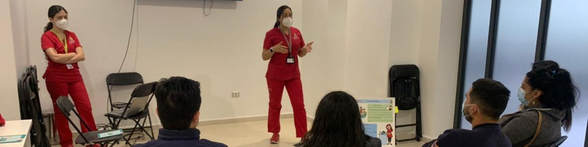

Usando los datos del dia a dia para entender y mejorar la atencion del Programa de la Mujer.
En Atencion Primaria registramos cientos de atenciones cada mes — controles prenatales, postparto, screening oncologico, talleres educativos. Pero esos datos quedan archivados sin ser analizados.
Que nos pueden decir sobre como estamos atendiendo a nuestras pacientes?
Explore cada area del Programa de la Mujer que analice con datos reales, consultas SQL y visualizaciones:
Toda gestante en control debe recibir dos vacunas: Influenza y DTPA. No es opcional — es una meta sanitaria nacional. El problema no es que no se registre el dato; el problema es que nadie lo estaba usando.
Cuando revise los datos, la pregunta no era "cuantas gestantes tenemos". Era: quien esta pendiente y quien se esta quedando sin tiempo. Una gestante sobre 28 semanas sin DTPA ya es una urgencia.
Influenza tiene brechas. Pero DTPA es otra escala — 87% de las gestantes pendientes:
Esta consulta cuenta, para cada vacuna, cuantas gestantes la tienen al dia y cuantas estan pendientes. El UNION ALL combina ambas vacunas en una sola tabla.
Ahora filtro solo a las gestantes sobre 28 semanas que aun no se vacunan — las mas urgentes.
La lactancia materna exclusiva (LME) es el estandar de oro en el control de puerperio. Las guias de la OMS y del Ministerio de Salud la recomiendan hasta los 6 meses. El sistema tambien registra la presencia del padre en el control como indicador de apoyo familiar.
Con una muestra inicial pequena — los primeros controles registrados — ya se puede validar que el sistema funciona y observar la distribucion real de tipos de alimentacion.
Aun con una muestra inicial, el sistema ya captura la variedad real de alimentacion — desde LME hasta formula exclusiva:
Agrupa todos los controles por tipo de alimentacion y cuenta cuantos hay de cada uno.
Cruza el tipo de alimentacion con la presencia del padre para ver si hay relacion entre ambos.
Esta es el area mas critica. Un PAP alterado o una mamografia alterada deben gatillar una derivacion a nivel secundario. Sin excepciones. Cada dia sin derivacion es un riesgo directo para la seguridad de la paciente.
La pregunta que quise responder fue simple: siempre se derivo a quien correspondia? Y si se derivo, cuanto se demoro el proceso.
99% suena bien. Pero en oncologia, cada caso sin derivar es una paciente en riesgo:
Cuenta, para cada tipo de examen alterado, cuantas pacientes fueron derivadas y cuantas no.
Para las que si fueron derivadas, calcula cuantos dias en promedio pasaron entre el examen y la derivacion.
Este proyecto muestra que con herramientas simples — una base de datos, SQL y Python — se pueden transformar registros clinicos en informacion que mejora la atencion.
No se necesita ser informatica. Solo curiosidad por los datos y ganas de mejorar la atencion de las pacientes.